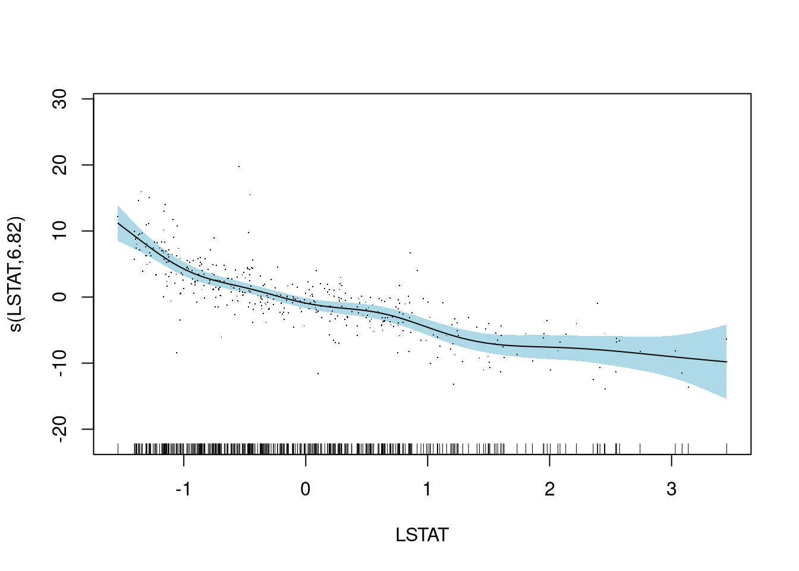

4 Boston housing dataset Example
Since GAM did not work well with the Ames housing dataset, we decided to use another dataset and to test the GAM method on it. The new dataset, Boston housing, includes 13 explanatory variables, and the response variable MEDV. The following is the description from Kaggle:
CRIM: per capita crime rate by townZN: proportion of residential land zoned for lots over 25,000 sq.ft.INDUS: proportion of non-retail business acres per townCHAS: Charles River dummy variable (1 if tract bounds river; 0 otherwise)NOX: nitric oxides concentration (parts per 10 million) [parts/10M]RM: average number of rooms per dwellingAGE: proportion of owner-occupied units built prior to 1940DIS: weighted distances to five Boston employment centresRAD: index of accessibility to radial highwaysTAX: full-value property-tax rate per \(10,000 [\)/10k]PTRATIO: pupil-teacher ratio by townB: The result of the equation B=1000(Bk - 0.63)^2 where Bk is the proportion of blacks by townLSTAT: % lower status of the population
Output variable:
MEDV: Median value of owner-occupied homes in \(1000's [k\)]
glimpse(boston) # p=13## Rows: 506
## Columns: 14
## $ CRIM <dbl> 0.00632, 0.02731, 0.02729, 0.03237, 0.06905, 0.02985, 0.08829,…
## $ ZN <dbl> 18.0, 0.0, 0.0, 0.0, 0.0, 0.0, 12.5, 12.5, 12.5, 12.5, 12.5, 1…
## $ INDUS <dbl> 2.31, 7.07, 7.07, 2.18, 2.18, 2.18, 7.87, 7.87, 7.87, 7.87, 7.…
## $ CHAS <dbl> 0, 0, 0, 0, 0, 0, 0, 0, 0, 0, 0, 0, 0, 0, 0, 0, 0, 0, 0, 0, 0,…
## $ NOX <dbl> 0.538, 0.469, 0.469, 0.458, 0.458, 0.458, 0.524, 0.524, 0.524,…
## $ RM <dbl> 6.575, 6.421, 7.185, 6.998, 7.147, 6.430, 6.012, 6.172, 5.631,…
## $ AGE <dbl> 65.2, 78.9, 61.1, 45.8, 54.2, 58.7, 66.6, 96.1, 100.0, 85.9, 9…
## $ DIS <dbl> 4.0900, 4.9671, 4.9671, 6.0622, 6.0622, 6.0622, 5.5605, 5.9505…
## $ RAD <dbl> 1, 2, 2, 3, 3, 3, 5, 5, 5, 5, 5, 5, 5, 4, 4, 4, 4, 4, 4, 4, 4,…
## $ TAX <dbl> 296, 242, 242, 222, 222, 222, 311, 311, 311, 311, 311, 311, 31…
## $ PTRATIO <dbl> 15.3, 17.8, 17.8, 18.7, 18.7, 18.7, 15.2, 15.2, 15.2, 15.2, 15…
## $ B <dbl> 396.90, 396.90, 392.83, 394.63, 396.90, 394.12, 395.60, 396.90…
## $ LSTAT <dbl> 4.98, 9.14, 4.03, 2.94, 5.33, 5.21, 12.43, 19.15, 29.93, 17.10…
## $ MEDV <dbl> 24.0, 21.6, 34.7, 33.4, 36.2, 28.7, 22.9, 27.1, 16.5, 18.9, 15…sum(is.na(boston)) # check for missing entries## [1] 0summary(boston) # check types of features## CRIM ZN INDUS CHAS
## Min. : 0.00632 Min. : 0.00 Min. : 0.46 Min. :0.00000
## 1st Qu.: 0.08205 1st Qu.: 0.00 1st Qu.: 5.19 1st Qu.:0.00000
## Median : 0.25651 Median : 0.00 Median : 9.69 Median :0.00000
## Mean : 3.61352 Mean : 11.36 Mean :11.14 Mean :0.06917
## 3rd Qu.: 3.67708 3rd Qu.: 12.50 3rd Qu.:18.10 3rd Qu.:0.00000
## Max. :88.97620 Max. :100.00 Max. :27.74 Max. :1.00000
## NOX RM AGE DIS
## Min. :0.3850 Min. :3.561 Min. : 2.90 Min. : 1.130
## 1st Qu.:0.4490 1st Qu.:5.886 1st Qu.: 45.02 1st Qu.: 2.100
## Median :0.5380 Median :6.208 Median : 77.50 Median : 3.207
## Mean :0.5547 Mean :6.285 Mean : 68.57 Mean : 3.795
## 3rd Qu.:0.6240 3rd Qu.:6.623 3rd Qu.: 94.08 3rd Qu.: 5.188
## Max. :0.8710 Max. :8.780 Max. :100.00 Max. :12.127
## RAD TAX PTRATIO B
## Min. : 1.000 Min. :187.0 Min. :12.60 Min. : 0.32
## 1st Qu.: 4.000 1st Qu.:279.0 1st Qu.:17.40 1st Qu.:375.38
## Median : 5.000 Median :330.0 Median :19.05 Median :391.44
## Mean : 9.549 Mean :408.2 Mean :18.46 Mean :356.67
## 3rd Qu.:24.000 3rd Qu.:666.0 3rd Qu.:20.20 3rd Qu.:396.23
## Max. :24.000 Max. :711.0 Max. :22.00 Max. :396.90
## LSTAT MEDV
## Min. : 1.73 Min. : 5.00
## 1st Qu.: 6.95 1st Qu.:17.02
## Median :11.36 Median :21.20
## Mean :12.65 Mean :22.53
## 3rd Qu.:16.95 3rd Qu.:25.00
## Max. :37.97 Max. :50.00nearZeroVar(boston) # check for near zero variable## integer(0)cor(boston)## CRIM ZN INDUS CHAS NOX
## CRIM 1.00000000 -0.20046922 0.40658341 -0.055891582 0.42097171
## ZN -0.20046922 1.00000000 -0.53382819 -0.042696719 -0.51660371
## INDUS 0.40658341 -0.53382819 1.00000000 0.062938027 0.76365145
## CHAS -0.05589158 -0.04269672 0.06293803 1.000000000 0.09120281
## NOX 0.42097171 -0.51660371 0.76365145 0.091202807 1.00000000
## RM -0.21924670 0.31199059 -0.39167585 0.091251225 -0.30218819
## AGE 0.35273425 -0.56953734 0.64477851 0.086517774 0.73147010
## DIS -0.37967009 0.66440822 -0.70802699 -0.099175780 -0.76923011
## RAD 0.62550515 -0.31194783 0.59512927 -0.007368241 0.61144056
## TAX 0.58276431 -0.31456332 0.72076018 -0.035586518 0.66802320
## PTRATIO 0.28994558 -0.39167855 0.38324756 -0.121515174 0.18893268
## B -0.38506394 0.17552032 -0.35697654 0.048788485 -0.38005064
## LSTAT 0.45562148 -0.41299457 0.60379972 -0.053929298 0.59087892
## MEDV -0.38830461 0.36044534 -0.48372516 0.175260177 -0.42732077
## RM AGE DIS RAD TAX PTRATIO
## CRIM -0.21924670 0.35273425 -0.37967009 0.625505145 0.58276431 0.2899456
## ZN 0.31199059 -0.56953734 0.66440822 -0.311947826 -0.31456332 -0.3916785
## INDUS -0.39167585 0.64477851 -0.70802699 0.595129275 0.72076018 0.3832476
## CHAS 0.09125123 0.08651777 -0.09917578 -0.007368241 -0.03558652 -0.1215152
## NOX -0.30218819 0.73147010 -0.76923011 0.611440563 0.66802320 0.1889327
## RM 1.00000000 -0.24026493 0.20524621 -0.209846668 -0.29204783 -0.3555015
## AGE -0.24026493 1.00000000 -0.74788054 0.456022452 0.50645559 0.2615150
## DIS 0.20524621 -0.74788054 1.00000000 -0.494587930 -0.53443158 -0.2324705
## RAD -0.20984667 0.45602245 -0.49458793 1.000000000 0.91022819 0.4647412
## TAX -0.29204783 0.50645559 -0.53443158 0.910228189 1.00000000 0.4608530
## PTRATIO -0.35550149 0.26151501 -0.23247054 0.464741179 0.46085304 1.0000000
## B 0.12806864 -0.27353398 0.29151167 -0.444412816 -0.44180801 -0.1773833
## LSTAT -0.61380827 0.60233853 -0.49699583 0.488676335 0.54399341 0.3740443
## MEDV 0.69535995 -0.37695457 0.24992873 -0.381626231 -0.46853593 -0.5077867
## B LSTAT MEDV
## CRIM -0.38506394 0.4556215 -0.3883046
## ZN 0.17552032 -0.4129946 0.3604453
## INDUS -0.35697654 0.6037997 -0.4837252
## CHAS 0.04878848 -0.0539293 0.1752602
## NOX -0.38005064 0.5908789 -0.4273208
## RM 0.12806864 -0.6138083 0.6953599
## AGE -0.27353398 0.6023385 -0.3769546
## DIS 0.29151167 -0.4969958 0.2499287
## RAD -0.44441282 0.4886763 -0.3816262
## TAX -0.44180801 0.5439934 -0.4685359
## PTRATIO -0.17738330 0.3740443 -0.5077867
## B 1.00000000 -0.3660869 0.3334608
## LSTAT -0.36608690 1.0000000 -0.7376627
## MEDV 0.33346082 -0.7376627 1.0000000# split the dataset
set.seed(013123) # set seed
index <- createDataPartition(y = boston$MEDV, p = 0.8, list = FALSE) # consider 70-30 split
boston_train <- boston[index,] # training data
boston_test <- boston[-index,] # test data# finally, after all preprocessing steps have been decided set up the overall blueprint
boston_recipe <- recipe(MEDV~., data = boston_train) # set up recipe
# specify feature engineering steps
boston_blueprint <- boston_recipe %>%
step_center(all_numeric(), -all_outcomes()) %>% # center (subtract mean) all numeric predictors (consider all the numeric predictors except the response)
step_scale(all_numeric(), -all_outcomes()) # scale (divide by standard deviation) all numeric predictors
# replace step_center and step_scale with step_normalize
boston_prepare <- prep(boston_blueprint, data = boston_train) # estimate feature engineering parameters based on training data
boston_baked_train <- bake(boston_prepare, new_data = boston_train) # apply the blueprint to training data for building final/optimal model
boston_baked_test <- bake(boston_prepare, new_data = boston_test) # apply the blueprint to test data for future usetunegrid<-data.frame(method = "GCV.Cp", select = TRUE)
set.seed(111)
boston_model<-train(boston_blueprint,
data=boston_train,
method="gam",
tuneGrid=data.frame(method = "GCV.Cp", select = TRUE), #method indicates the smoothing parameter estimation method, GCV for models with unknown scale parameter and Mallows' Cp/UBRE/AIC for models with known scale; select=TRUE adds extra penalty so that the smoothing parameter estimation can completely remove terms from the model
trControl=trainControl(method="cv",number=5)
)
boston_model$results$RMSE## [1] 3.989444boston_model$finalMo##
## Family: gaussian
## Link function: identity
##
## Formula:
## .outcome ~ CHAS + RAD + s(ZN) + s(PTRATIO) + s(TAX) + s(INDUS) +
## s(NOX) + s(B) + s(AGE) + s(DIS) + s(RM) + s(LSTAT) + s(CRIM)
##
## Estimated degrees of freedom:
## 0.000 0.927 2.906 5.636 7.931 4.886 0.000
## 0.889 8.392 5.813 4.421 total = 44.8
##
## GCV score: 12.95974# obtain predictions and test set RMSE
boston_final_model <- gam(MEDV~CHAS + RAD + s(ZN) + s(PTRATIO) + s(TAX) + s(INDUS) +
s(NOX) + s(B) + s(AGE) + s(DIS) + s(RM) + s(LSTAT) + s(CRIM),data=boston_baked_train)
boston_final_model_preds<- predict(object = boston_final_model, newdata = boston_baked_test, type = "response") # obtain predictions
sqrt(mean((boston_final_model_preds - boston_baked_test$MEDV)^2)) # calculate test set RMSE## [1] 3.077761coef(boston_final_model)## (Intercept) CHAS RAD s(ZN).1 s(ZN).2
## 2.267715e+01 2.022569e-01 3.655526e+00 5.824984e-08 2.806487e-09
## s(ZN).3 s(ZN).4 s(ZN).5 s(ZN).6 s(ZN).7
## -3.620269e-08 -4.589304e-08 2.602030e-08 -2.756246e-08 -1.855087e-08
## s(ZN).8 s(ZN).9 s(PTRATIO).1 s(PTRATIO).2 s(PTRATIO).3
## 1.102486e-07 2.693148e-01 9.792069e-09 -1.232844e-08 -4.982888e-09
## s(PTRATIO).4 s(PTRATIO).5 s(PTRATIO).6 s(PTRATIO).7 s(PTRATIO).8
## 1.256083e-08 5.046396e-10 1.040307e-08 3.151301e-09 -6.044307e-08
## s(PTRATIO).9 s(TAX).1 s(TAX).2 s(TAX).3 s(TAX).4
## -1.633053e+00 3.618700e+00 1.405151e+00 -7.740275e-02 -5.318771e-01
## s(TAX).5 s(TAX).6 s(TAX).7 s(TAX).8 s(TAX).9
## -8.093729e-02 -2.683977e-01 -6.878059e-02 -2.982261e+00 -6.225554e+00
## s(INDUS).1 s(INDUS).2 s(INDUS).3 s(INDUS).4 s(INDUS).5
## -3.352131e+00 6.087354e-01 2.121811e+00 -4.651431e+00 -4.869233e-01
## s(INDUS).6 s(INDUS).7 s(INDUS).8 s(INDUS).9 s(NOX).1
## -4.174749e+00 3.677786e+00 9.805027e+00 -3.332319e+00 -2.779861e+00
## s(NOX).2 s(NOX).3 s(NOX).4 s(NOX).5 s(NOX).6
## -1.453622e+01 -7.149468e-01 1.176423e+01 7.867835e+00 -1.345680e+01
## s(NOX).7 s(NOX).8 s(NOX).9 s(B).1 s(B).2
## -4.829748e+00 4.389334e+01 5.054269e+00 1.036487e-01 1.103010e+00
## s(B).3 s(B).4 s(B).5 s(B).6 s(B).7
## -4.976484e-01 7.795278e-01 2.786051e-01 -7.448779e-01 3.100793e-01
## s(B).8 s(B).9 s(AGE).1 s(AGE).2 s(AGE).3
## 2.754377e+00 1.674564e-01 6.130130e-08 3.960806e-08 -1.406213e-09
## s(AGE).4 s(AGE).5 s(AGE).6 s(AGE).7 s(AGE).8
## 4.299025e-08 -3.504342e-09 3.671368e-08 -4.431223e-11 1.602136e-07
## s(AGE).9 s(DIS).1 s(DIS).2 s(DIS).3 s(DIS).4
## 1.056042e-01 -5.787123e+00 1.296531e+01 -4.342308e+00 -9.456774e+00
## s(DIS).5 s(DIS).6 s(DIS).7 s(DIS).8 s(DIS).9
## 4.443850e+00 -8.397223e+00 2.881023e-01 -1.274815e+01 -2.105359e+01
## s(RM).1 s(RM).2 s(RM).3 s(RM).4 s(RM).5
## 5.560717e+00 6.823768e+00 4.391045e+00 -3.983784e+00 -2.724092e+00
## s(RM).6 s(RM).7 s(RM).8 s(RM).9 s(LSTAT).1
## 2.646801e+00 4.467370e+00 1.992231e+01 -8.990143e+00 1.543097e+00
## s(LSTAT).2 s(LSTAT).3 s(LSTAT).4 s(LSTAT).5 s(LSTAT).6
## -6.815432e+00 8.930136e-01 2.659123e+00 1.762691e+00 3.583721e+00
## s(LSTAT).7 s(LSTAT).8 s(LSTAT).9 s(CRIM).1 s(CRIM).2
## 3.954289e-01 -1.149471e+01 -7.907894e+00 7.107952e+00 1.420625e+01
## s(CRIM).3 s(CRIM).4 s(CRIM).5 s(CRIM).6 s(CRIM).7
## 2.044314e-02 -6.418126e+00 5.476575e+00 6.115682e+00 -1.279049e+00
## s(CRIM).8 s(CRIM).9
## 1.908162e+01 -3.100936e+00summary(boston_final_model)##
## Family: gaussian
## Link function: identity
##
## Formula:
## MEDV ~ CHAS + RAD + s(ZN) + s(PTRATIO) + s(TAX) + s(INDUS) +
## s(NOX) + s(B) + s(AGE) + s(DIS) + s(RM) + s(LSTAT) + s(CRIM)
##
## Parametric coefficients:
## Estimate Std. Error t value Pr(>|t|)
## (Intercept) 22.6771 0.1588 142.800 < 2e-16 ***
## CHAS 0.2023 0.1822 1.110 0.267670
## RAD 3.6555 1.0438 3.502 0.000521 ***
## ---
## Signif. codes: 0 '***' 0.001 '**' 0.01 '*' 0.05 '.' 0.1 ' ' 1
##
## Approximate significance of smooth terms:
## edf Ref.df F p-value
## s(ZN) 1.000 1.000 0.572 0.44993
## s(PTRATIO) 1.000 1.000 30.385 < 2e-16 ***
## s(TAX) 3.082 3.730 8.783 3.23e-06 ***
## s(INDUS) 7.247 8.177 3.245 0.00134 **
## s(NOX) 9.000 9.000 12.730 < 2e-16 ***
## s(B) 2.089 2.571 1.623 0.17098
## s(AGE) 1.000 1.000 0.088 0.76629
## s(DIS) 8.777 8.983 6.870 < 2e-16 ***
## s(RM) 8.566 8.939 21.781 < 2e-16 ***
## s(LSTAT) 6.823 7.926 20.919 < 2e-16 ***
## s(CRIM) 4.548 5.496 8.095 < 2e-16 ***
## ---
## Signif. codes: 0 '***' 0.001 '**' 0.01 '*' 0.05 '.' 0.1 ' ' 1
##
## R-sq.(adj) = 0.882 Deviance explained = 89.8%
## GCV = 11.906 Scale est. = 10.264 n = 407plot(boston_final_model, residuals=TRUE,shade = TRUE, shade.col = "lightblue")